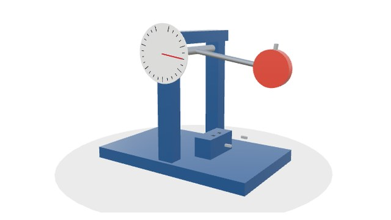
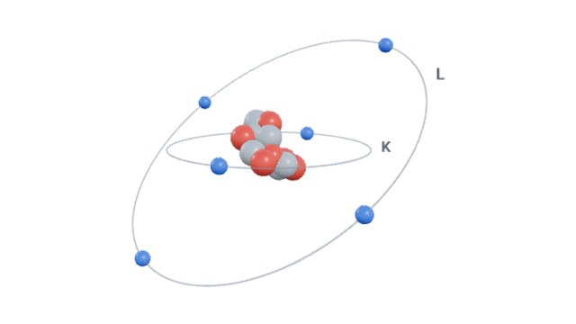
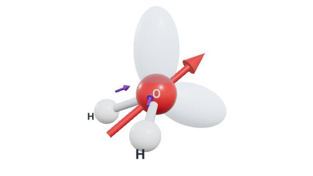
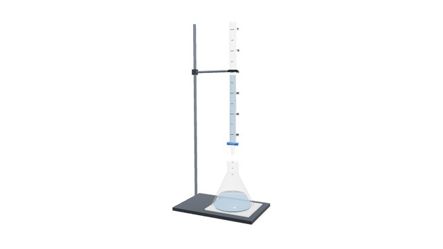
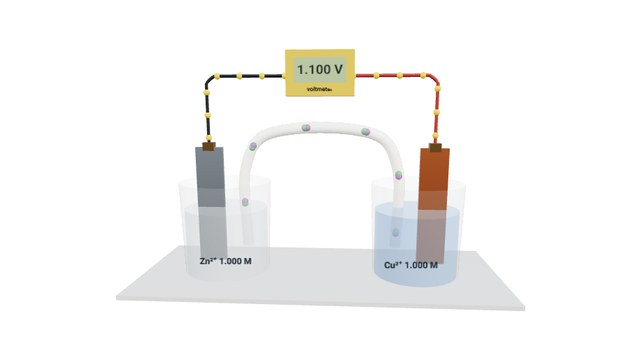
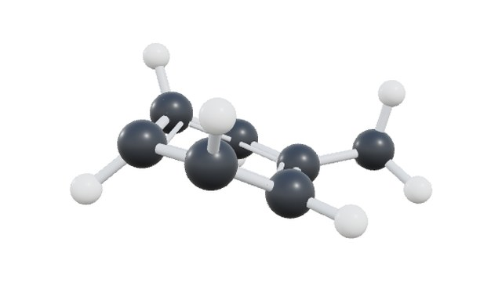
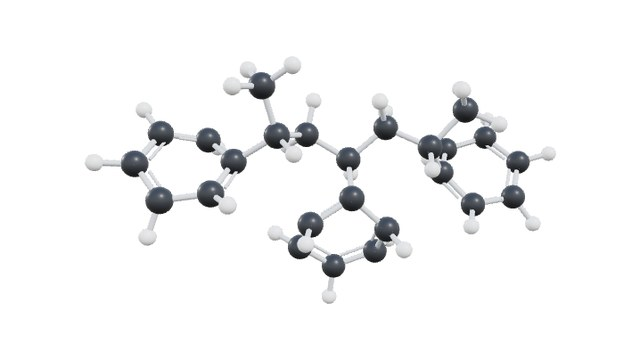
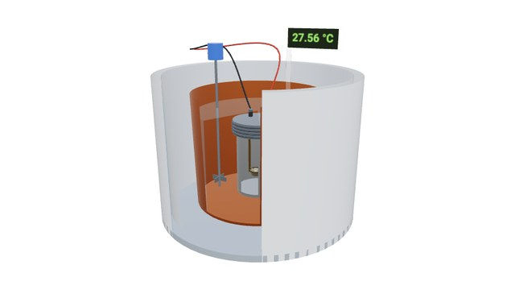
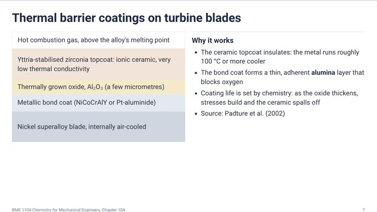

Interactive notes
All ten chapters of Chemistry for Mechanical Engineers as slide decks you can play with: molecules, crystals and laboratory apparatus in 3D, live simulations, worked examples where you change the numbers and the working follows, and a self-check at the end of each chapter. Each chapter opens as 16:9 slides that scale to the screen: click or press Space or the right arrow key for the next slide, the left arrow key to go back, or choose “Page view” to read it as one scrolling page, which suits a phone. In full screen the bar at the bottom hides itself and comes back when the mouse is at the bottom edge. “PDF” in the same bar opens the print dialog: choose Save as PDF to get every slide on its own 16:9 page.

Properties of Materials
Physical, chemical and mechanical properties; metals, ceramics, polymers and composites; the tensile, impact, hardness, fatigue and creep tests that engineers rely on.
- Charpy impact tester in 3D with the ductile-to-brittle transition
- Live tensile test with yield, UTS and elongation
- Property chart for choosing materials
- Fatigue S–N and creep curves

Atomic Structure
Protons, neutrons and electrons; isotopes and atomic mass; Bohr levels and spectra; quantum numbers and orbitals; electron configurations and the periodic table with its trends.
- Atom builder in 3D: change protons, neutrons, electrons
- s, p, d and f orbitals in 3D
- Fill the orbitals one electron at a time (Aufbau, Pauli, Hund)
- Clickable periodic table coloured by family or trend

Chemical Bonding
The octet rule and ions; ionic, covalent and dative bonds; electronegativity and polarity; molecular orbitals and bond order; VSEPR shapes; intermolecular forces and hydrogen bonding.
- Electron transfer between a metal and a non-metal
- Ion-pair energy curve and lattice strength
- VSEPR molecules in 3D with lone pairs and dipoles
- Molecular orbital diagrams and hydrogen-bonded water

Equilibrium, Acids and Bases
Reversible reactions and dynamic equilibrium; the equilibrium constant in concentrations and pressures; Le Chatelier and the reaction quotient; acids and bases, pH, titration and buffers.
- Dynamic equilibrium with molecules you can watch
- Disturb PCl₅ ⇌ PCl₃ + Cl₂ and compare Q with K
- pH of strong and weak acids and bases
- Titration on a 3D bench and a buffer against plain water

Electrochemistry
Redox and oxidation states; galvanic cells and standard potentials; the Nernst equation; electrolysis and Faraday's laws; fuel cells; primary, lead–acid, nickel and lithium-ion batteries.
- Galvanic cell in 3D from any two metals, with Nernst
- Electroplating to a set thickness
- PEM fuel cell and lithium-ion intercalation
- Battery pack designer for series and parallel cells

Solids and Material Structure
Crystalline and amorphous solids; unit cells, coordination and packing; density from the cell; ionic, molecular, network and metallic solids; alloys, ceramics and glass.
- Unit cells in 3D, cut at the faces to count the atoms
- Density from the unit cell
- Why salt cleaves and metals bend
- Metals across the table, alloys, crystal against glass

Carbon and its Compounds
Hybridisation of carbon; alkanes, alkenes, alkynes, rings and aromatics; isomers and IUPAC naming; functional groups; substitution, elimination, addition, oxidation and condensation.
- sp³, sp² and sp hybrid orbitals in 3D
- Over 40 molecules in 3D: ball and stick or space filling
- Naming worked step by step
- Reaction types with reactants and products in 3D

Polymers
Monomers and polymers; number and weight average molar mass; copolymers; addition and condensation polymerisation; the engineering polymers; plastic recycling.
- Chain-length distribution with Mn, Mw and dispersity
- Addition and condensation polymerisation animated
- Polymer chains in 3D with their properties
- Recycling methods and resin codes

Fuels and Combustion
Classification of fuels; gross and net calorific value; the bomb and Boys calorimeters; Dulong's formula; air for combustion; wood and the ranks of coal; proximate and ultimate analysis.
- Bomb calorimeter in 3D: fire it and read the rise
- Dulong's formula from composition
- Air and flue gas for a gaseous fuel
- Ranks of coal and analysis worked through

Applications in Mechanical Engineering
Two slide decks: 10A applications (materials, water treatment, corrosion, plating, batteries, fuels, lubricants, polymers) and 10B chemical instrumentation (calibration, pH, calorimetry, flue gas, XRF and standard tests).
- 57 slides with 8 simulations in 10A
- 47 slides with 6 simulations in 10B
- Worked examples revealed step by step
- Exports to PDF, one slide per page